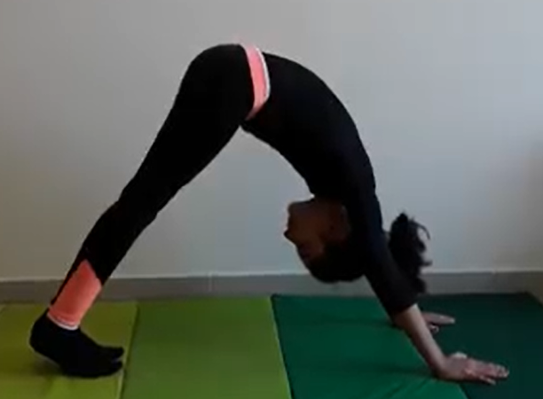

DOWNWARD FACING DOG POSE

Steps to perform Downward Frcing Dog Pose
- Come to your hands and knees with your wrists underneath the shoulders and your knees underneath the hips.
- Curl your toes under and push back through your hands to lift your hips and straighten your legs.
- Spread your fingers and ground down from the forearms into the fingertips.
- Outwardly rotate your upper arms to broaden the collarbones.
- Let your head hang and move your shoulder blades away from your ears towards your hips.
- Engage your quadriceps strongly to take the burden of your body's weight off your arms. This action goes a long way toward making this a resting pose.
- Rotate your thighs inward, keep your tail high, and sink your heels towards the floor.
- Check that the distance between your hands and feet is correct by coming forward to a plank position. The distance between the hands and feet should be the same in these two poses. Do not step the feet toward the hands in Down Dog in order the get the heels to the floor.
- Exhale and bend your knees to release and come back to your hands and knees.